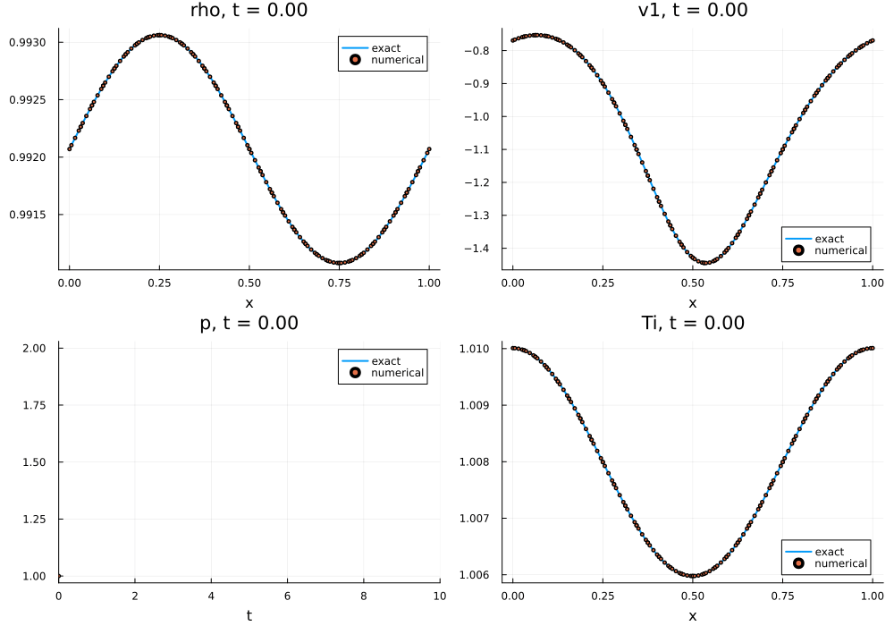
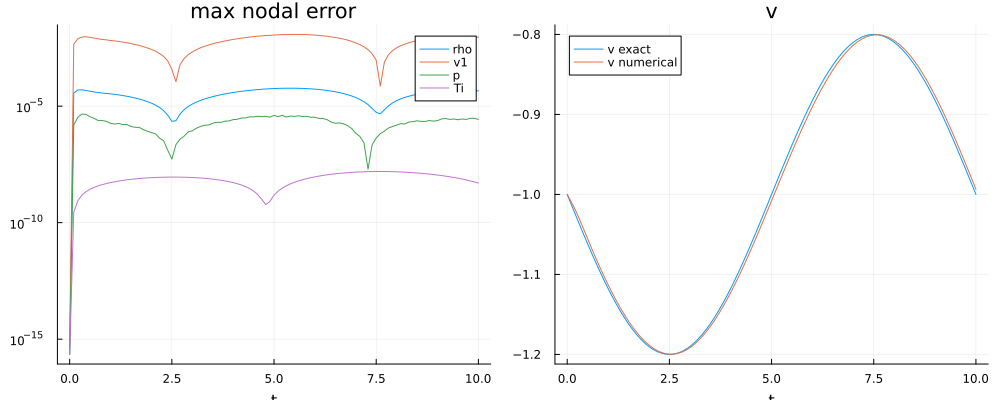
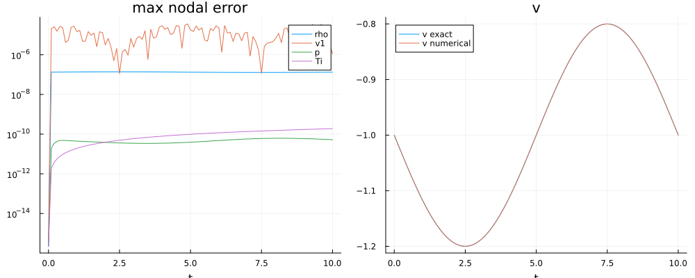

Manufactured solution
For the termite mound model, no exact solution is known. Therefore, we will validate our numerical results against a manufactured solution. Later, we will compare both numerical methods against the constructed analytical solution.
Idea
- Choose the solution. We prescribe smooth fields $\hat\rho$, $\hat u$, $\hat p_0$, $\hat v$ and $\hat T_i$, built from sines and cosines. They are periodic in $x$ and have all the key properties that a solution of the model should have. Since the fields are given by formulas, all their derivatives in space and time are known exactly.
- Add forcing terms. In general, the chosen fields do not solve the termite mound equations. Therefore, we add source terms $s_\rho$, $s_T$, $s_p$ and $s_v$ to the equations. Each source term is the difference between the left-hand side and the right-hand side of its equation, evaluated with the chosen fields. With these source terms, the chosen fields are an exact solution of the forced equations.
- Compare. We solve the forced equations numerically and compare the result with the chosen fields. The error must decrease when the mesh and the time step are refined.
Note that the manufactured solution does not solve the original termite mound model. Instead, it is an analytical solution of the termite mound model with additional forcing terms. It tests the numerical method, not the physics.
Termite mound equations with additional forcing
The manufactured solution solves
\[\begin{aligned} \frac{\partial \rho}{\partial t} + \frac{\partial (\rho u)}{\partial x} &= -\frac{A_x}{A} \rho u + s_\rho, \\ \frac{\partial T_i}{\partial t} &= k_i (T - T_i) + s_T, \\ \frac{\mathrm{d} p_0}{\mathrm{d} t} &= -\gamma p_0 \left( \frac{\partial u}{\partial x} + \frac{A_x}{A} u \right) - \frac{k_w}{\sqrt{A}} (T - T_u) + s_p, \\ \left( \int_0^1 \frac{\rho}{A} \, dx \right) \frac{\mathrm{d} v}{\mathrm{d} t} &= \int_0^1 \left[ F_v + s_v \right] dx, \\ p_0 &= \rho T, \qquad A(0) \, u(t, 0) = v(t), \end{aligned}\]
with the momentum integrand $F_v = -\rho u u_x - \frac{\beta}{A} \rho u \big(\eta + (1-\eta)|u|\big) - \frac{h_x}{Fr^2} (\rho - \rho_{h_0})$. The source terms are obtained by inserting the chosen fields:
\[\begin{aligned} s_\rho &= \hat\rho_t + (\hat\rho \hat u)_x + \frac{A_x}{A} \hat\rho \hat u, \\ s_T &= \hat T_{i,t} - k_i (\hat T - \hat T_i), \\ s_p &= \hat p_0' + \gamma \hat p_0 \left( \hat u_x + \frac{A_x}{A} \hat u \right) + \frac{k_w}{\sqrt{A}} (\hat T - \hat T_u), \\ s_v &= \frac{\hat\rho}{A} \hat v' - \hat F_v, \end{aligned}\]
with $\hat T = \hat p_0 / \hat\rho$. The source $s_p$ depends on $x$ and also enters the velocity constraint. Only then can the velocity $\hat u$ be chosen freely.
Chosen fields
The fields are traveling waves around the initial state of the termite mound simulations. With $\omega = 2\pi/10$ (one period for $t \in [0, 10]$) and $k = 2\pi$:
\[\begin{aligned} \hat\rho &= \rho_0 \big(1 + \varepsilon_\rho \sin(kx + \omega t)\big), & \hat p_0 &= 1 + \varepsilon_p \sin(\omega t), \\ \hat v &= v_0 \big(1 + \varepsilon_v \sin(\omega t)\big), & \hat T_i &= T_{i,0} \big(1 + \varepsilon_T \cos(kx - \omega t)\big), \\ \hat u &= \frac{\hat v + w}{A}, & w &= \varepsilon_u \big(1 + \tfrac{1}{2} \sin(\omega t)\big) \sin(kx), \end{aligned}\]
with $\varepsilon_\rho = 10^{-3}$, $\varepsilon_p = 10^{-3}$, $\varepsilon_v = 0.2$, $\varepsilon_u = 0.1$ and $\varepsilon_T = 2 \cdot 10^{-3}$. Here $\rho_0 = 1/T_0$ and $T_{i,0} = T_0$ with the initial air temperature $T_0$, and $v_0$ is the initial velocity. Key properties:
- all fields are smooth and periodic in $x$, and $\hat p_0$ only depends on time,
- $w(t, 0) = 0$, so $A(0) \hat u(t, 0) = \hat v(t)$ holds exactly.
This manufactured solution only tests solutions with negative velocities. A similar manufactured solution can be constructed for purely positive velocities.
The density perturbation $\varepsilon_\rho$ must stay small. A larger density perturbation makes the manufactured solution unstable.
Comparison of the numerical methods
We solve the forced equations with both methods on $t \in [0, 10]$, with the variable cross section $A(x) = 1 + 0.3 \sin(2\pi x + \pi/2)$ (so that all $A$ and $A_x$ terms are active), polynomial degree 4 and refinement level 5. The examples are examples/manufactured_solutions/elixir_manufactured_splitting.jl and examples/manufactured_solutions/elixir_manufactured_coupled.jl. The additional sources are passed as follows:
# splitting
semi = SemidiscretizationHyperbolic(mesh, equations, ManufacturedInitialCondition, dg,
source_terms = manufactured_source_terms,
boundary_conditions = boundary_condition_periodic)
godunov_splitting_callback =
GodunovSplittingCallback(CarpenterKennedy2N54(williamson_condition = false),
source_terms = manufactured_source_terms_ode)
# coupled
semi = SemidiscretizationHyperbolic(mesh, equations, ManufacturedInitialCondition, dg,
source_terms = CoupledSourceTerms(manufactured_source_terms;
ode_source_terms = manufactured_source_terms_ode),
boundary_conditions = boundary_condition_periodic)Splitting method
Numerical (markers) and exact (lines) solution of the four variables $\rho$, $u$, $p_0$ and $T_i$. Since $p_0$ is constant in space, it is shown over time:

Maximum nodal error of $\rho$, $u$ (v1 in the plot), $p_0$ and $T_i$ over time (left) and the auxiliary velocity $v$, exact and numerical (right):

Coupled method
Numerical (markers) and exact (lines) solution of the four variables $\rho$, $u$, $p_0$ and $T_i$. Since $p_0$ is constant in space, it is shown over time:
Maximum nodal error of $\rho$, $u$ (v1 in the plot), $p_0$ and $T_i$ over time (left) and the auxiliary velocity $v$, exact and numerical (right):

Result
Both methods converge to the manufactured solution, but with different rates. When the mesh is refined (with a fixed CFL number), the error of the splitting method decreases only with first order, because the splitting error dominates. The error of the coupled method decreases with about fifth order, the order of the DG method with polynomial degree 4.